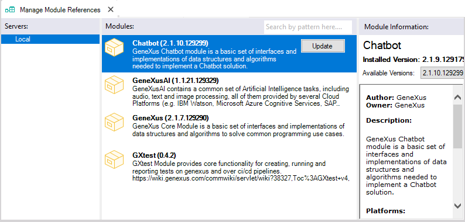
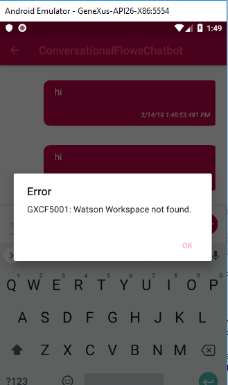
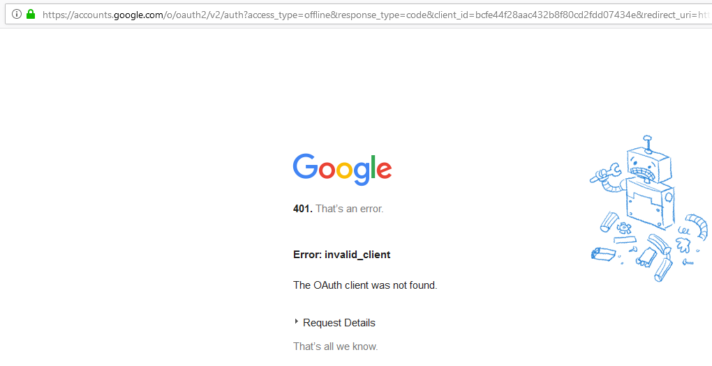
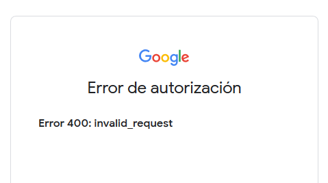

This page summarizes some of the errors related to the Chatbot generator that may be encountered through the various stages (during generation or at runtime) and explains the causes of such errors and how to solve them.
Synchronization1. Using DialogFlow, the instance synchronization fails.Problem. The following error is thrown in the General output:
Cause / Solution. The credentials are used to connect to the provider, and they will be stored in your development machine. This error means that any of them are not valid. Check the credentials Client Id property and/or Client Secret property, the Dialogflow Agent property and the Google Cloud Project property. For more details, see Configure Google Dialogflow for the Chatbot generator. Generation1. The resources are not being updated.Problem. The resources (CommonChatbots module or the Chatbot generator's Theme Classes) are not being updated. In some cases, when you update to a new upgrade, the resources have fixes which you may need to update in your KB. Cause / Solution. The resources are automatically updated in the Build process. However, if for some reason they are not updated (and there are changes to be updated), you can force the updating of resources by executing the Force Chatbot Generation menu option. 2. The Chatbot module isn't updated automatically. This is the expected behavior.If you see the following warning: ========== Copying Module 'GeneXus' started ========== You have to update it through the Knowledge Manager -> Manage Module References option:  3. Programs that should be generated automatically aren't being generated. Problem: Some objects should be automatically generated. However, this depends on the Generate Web UI property and the Generate UI property. Cause/ Solution: If Enable Web UI Generation property and the Enable SD UI Generation property are set to FALSE, you may encounter the following warning, which means that none of the UI objects are automatically generated (e.g., <InstanceName>WEBUI and <InstanceName>SDUI objects). warning: <Flow Name> component can't be generated because the web and sd UI generation are disabled at the conversational flows instance '<Instance Name>' As a result, the chatbot may not work as expected. Runtime1. The chatbot replies with an empty string.Problem. The response message of the chatbot is empty. Cause / Solution I. Check that the GXCF_Chatbots.config (it was called GXCF_<InstanceName>Chatbot.config prior to GeneXus 16 upgrade 7) file is under the virtual directory in .NET, and the WEB-INF directory of the servlet server in JAVA. You should also check the contents of this file, as it may have invalid information, such as the reference to the workspaceId, the APIkey, or any other information which may not be valid. If you generate the log file (*), you may see an entry similar to the following:
System.Net.WebException: The remote server returned an error: (401) Unauthorized.
at System.Net.HttpWebRequest.GetResponse()
at GeneXus.Http.Client.GxHttpClient.Execute(String method, String name)
10:55:24,466 [15] DEBUG GeneXus.Http.Client.GxHttpClient - Reading response...
10:55:24,490 [15] DEBUG GeneXus.Http.Client.GxHttpClient - BytesRead 37
10:55:24,495 [15] DEBUG GeneXus.Http.Client.GxHttpClient - BytesRead 0
10:55:24,501 [15] DEBUG GeneXus.Http.Client.GxHttpClient - _responseString {"code":401, "error": "Unauthorized"}
10:55:24,505 [15] DEBUG GeneXusUserLog - Chatbot Generator - Response body: {"code":401, "error": "Unauthorized"}
See Connecting to the Chatbot Provider for more information. Specifically, check if you have a warning in the output, as follows:
In such case, the GXCF_Chatbots.config cannot be created. Cause / Solution II. Check the Web Notifications and Progress UC requirements as the Chatbot Generator uses Web notifications as a basis. (*) Note: For troubleshooting, you can set the Log level property and Log output property to get a detailed trace about the dialog between the client and the Provider.
Important Note: As of GeneXus 16 upgrade 3, error messages can be configured to be displayed on the prototyping screen (see SAC 42519).  See Chatbot Generator common errors and solutions. 2. Using DialogFlow provider, the following web page appears after setting the Instance Credentials.Problem. Error 401 is thrown when you try to configure the instance to use DialogFlow.  Or the following:  If you check the General output, you may see the following error: Refreshing instance <instance> error: An error occurred while applying pattern instance x: 'System.AggregateException' error: One or more errors occurred. error: One or more errors occurred. error: Error:"invalid_client", Description:"Unauthorized", Uri:"" Pattern generation (Conversational Flows) Failed Cause / Solution II. Some information related to the connection to DialogFlow is not valid. Check the credentials Client Id property and/or Client Secret property, the Dialogflow Agent property and the Google Cloud Project property. |
| Backlinks |
| Toc:Chatbots in GeneXus |